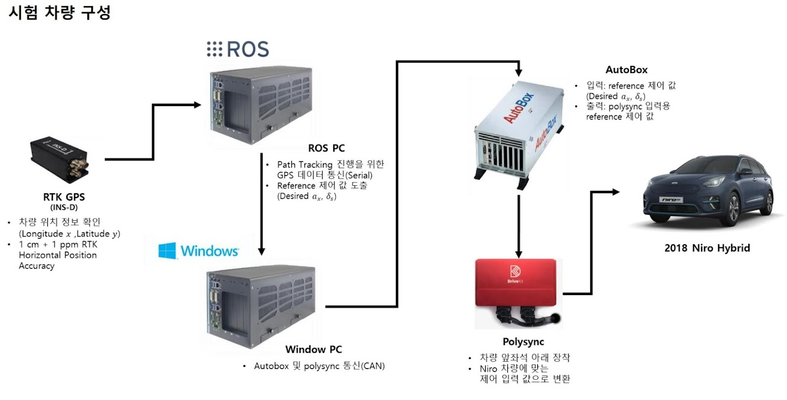
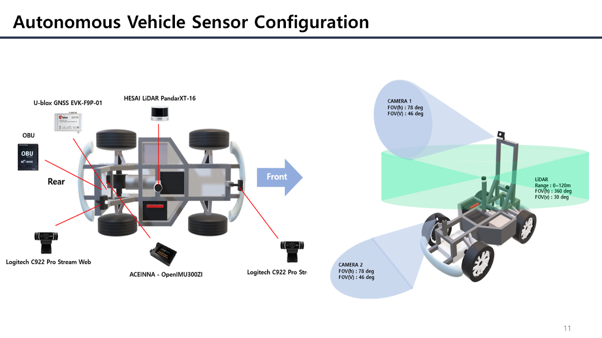
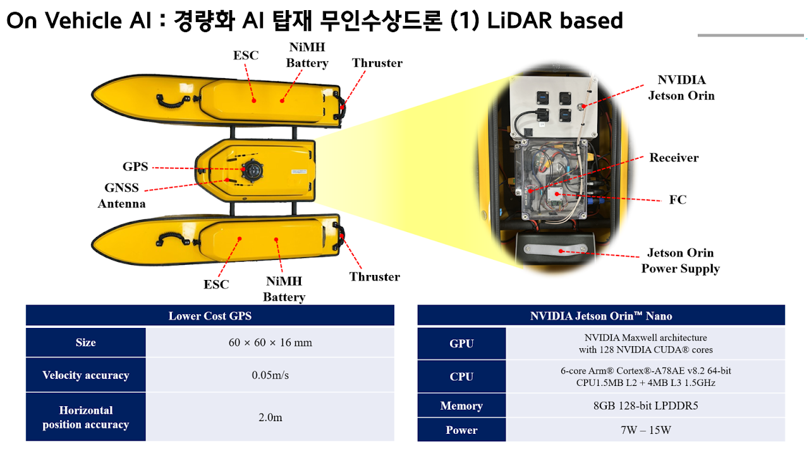
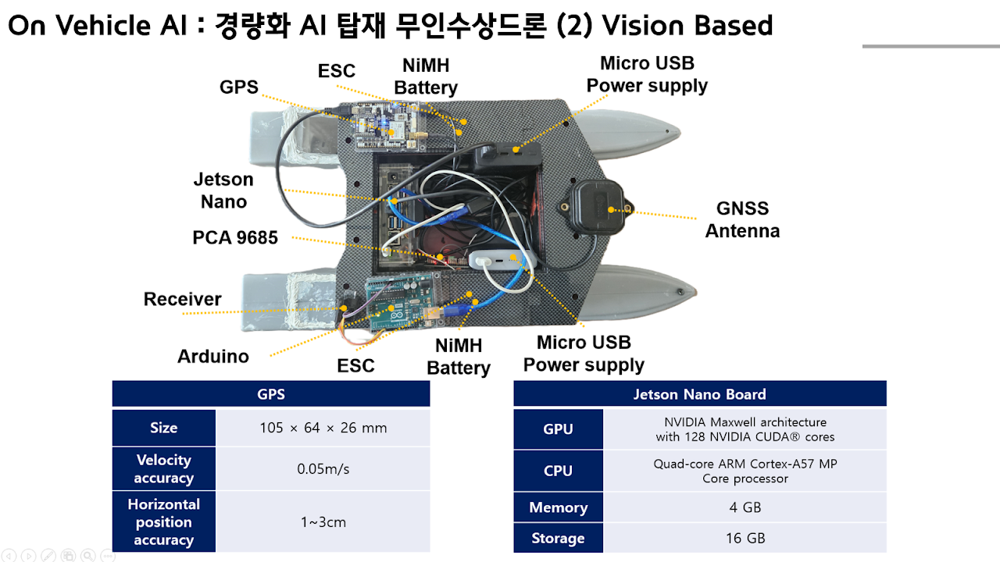

Skip to content
RiMS
Research in
Intelligent
Mobility
Systems Lab
Menu
＋
Home
Members
Professor
Students
Alumni
Research
Autonomous Mobility
Physical AI & Digital Twins
High-Performance Driving Experience
Projects
Publications
Vehicle Platform
Board
Contact
Vehicle Platform

Vehicle Test Platform - 2018 Niro Hybrid

Vehicle Test Platform - ERP42

LiDAR-Based Autonomous Surface Vehicle

Vision-Based Autonomous Surface Vehicle